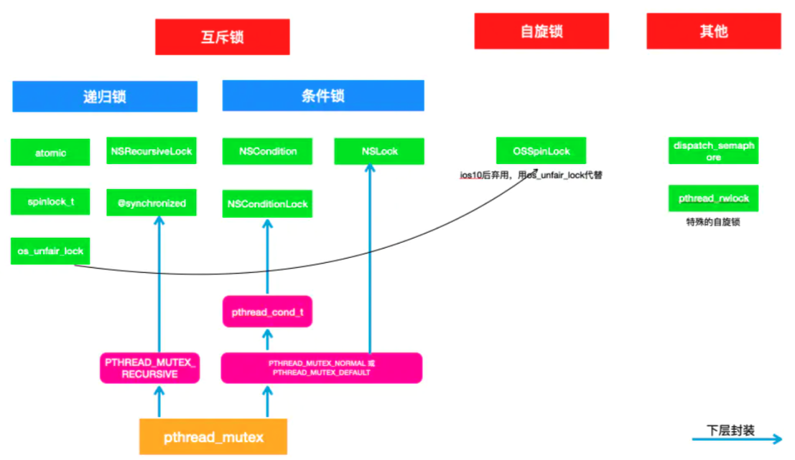

多线程
多线程方式
- NSThread
- NSOperation
- GCD
- pthread
NSThread
使用方式：
NSThread *thread = [[NSThread alloc] initWithTarget:self selector:@selector(run:) object:nil];
[thread start];
GCD
- GCD 可用于多核的并行运算；
- GCD 会自动管理线程的生命周期（创建线程、调度任务、销毁线程）；
- 创建线程简单。
GCD创建的异步任务，虽然有开启新线程的能力，但不一定开启的。比如同步的任务，不会开启线程
Group
- 通过group相关接口，gcd可以实现类似promise的all能力。即可以等多个异步任务，执行完毕回调指定接口。
Barrier
- 栅栏，可以阻隔开多个并发任务
- 通过dispatch_barrier_async添加的block会等到之前添加所有的block执行完毕再执行
- 在dispatch_barrier_async之后添加的block会等到dispatch_barrier_async添加的block执行完毕再执行
- dispatch_barrier_async的上述特点只在自己创建的concurrent queue有效, 在serial queue和global concurrent queues中的作用和dispatch_sync完全相同
NSOperation
- 底层使用gcd来实现
- 支持创建依赖关系
- 支持通过KVO观察Operation当前的状态（是否执行，取消）
- 支持设置优先级
锁
锁的种类：
- 自旋锁 （os_unfair_lock）
- 互斥锁
- 递归锁 （NSRecursiveLock、@synchronized、atomic）
- 非递归锁 （NSLock、NSCondition、NSConditionLock）
递归锁：同一线程多次获取该锁，而不会产生死锁。比如在一个递归接口中，多次获取锁，是ok的。
NSConditionLock，是有条件的互斥锁
OSSpinLock因为安全问题，在iOS10之后，被os_unfair_lock取代
os_unfair_lock实现上是会处于
休眠状态，不会忙等。
锁的关系： (虽然图上将os_unfair_lock划至互斥锁，但其更应该属于自旋锁)

性能从高到底：
- os_unfair_lock
- OSSpinLock (不再使用)
- dispatch_semaphore
- pthread_mutex(default)
- dispatch_queue(DISPATCH_QUEUE_SERIAL)
- NSLock
- NSCondition
- pthread_mutex(recursive)
- NSRecursiveLock
- NSConditionLock
- @synchronized
不同锁的使用场景
- 互斥锁会改变线程的状态，使得内核不断的调度线程资源，因此效率上比自旋锁要低很多，不适合使用自旋锁的场景都使用互斥锁。
- 自旋锁在线程的等待过程中是活跃的，避免了进程上下文的调度开销，因此对于线程只会阻塞很短时间的场合是有效的。因此自旋锁适合用于短时间内的轻量级锁定，主要用在临界区持锁时间非常短且CPU资源不紧张的情况下。
信号量
gcd信号量，是特殊的互斥锁，可以控制线程并发访问的数量。其是基于内核信号量的封装。
pthread_rwlock
读写锁，其是一种特殊的自旋锁。